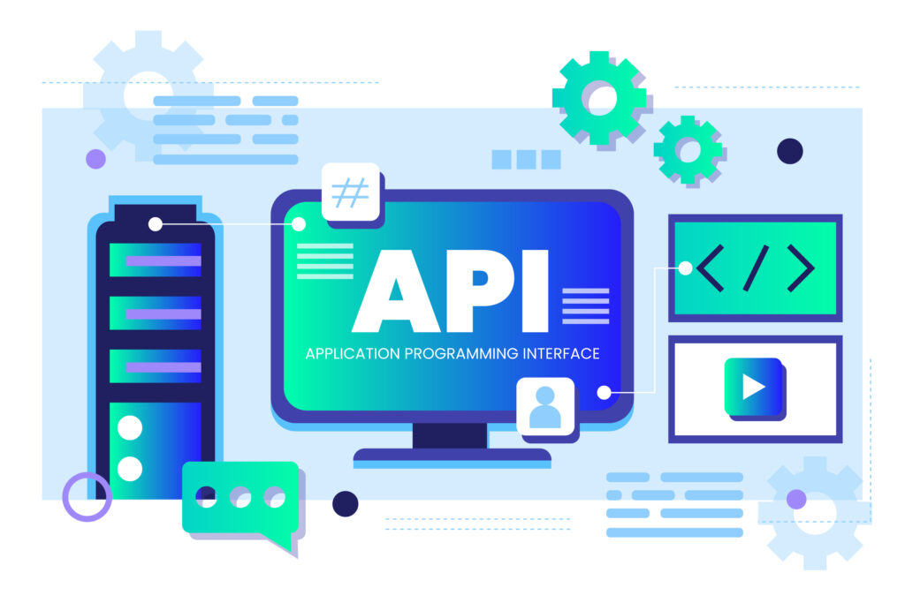

Eventos y APIs en React
Manejo de Eventos en React
Los eventos en React permiten manejar interacciones del usuario, como clics, envíos de formularios, y más. React utiliza SyntheticEvents para normalizar eventos entre diferentes navegadores.
Las APIs (Application Programming Interfaces) permiten a los desarrolladores interactuar con servicios externos para obtener o enviar datos.
Axios es una biblioteca popular para hacer solicitudes HTTP desde el navegador, ofreciendo una interfaz más limpia que fetch nativo.
Programación Asincrónica
Las promesas y async/await son patrones en JavaScript para manejar operaciones asincrónicas, permitiendo escribir código que se ejecuta de manera no bloqueante.
Ejemplo de consumo de API:
import axios from 'axios';
import { useState, useEffect } from 'react';
function UserList() {
const [users, setUsers] = useState([]);
const [loading, setLoading] = useState(true);
const [error, setError] = useState(null);
useEffect(() => {
fetchUsers();
}, []);
const fetchUsers = async () => {
try {
setLoading(true);
const response = await axios.get('https://jsonplaceholder.typicode.com/users');
setUsers(response.data);
} catch (err) {
setError('Error al cargar usuarios');
} finally {
setLoading(false);
}
};
if (loading) return <div>Cargando...</div>;
if (error) return <div>Error: {error}</div>;
return (
<div>
{users.map(user => (
<div key={user.id}>
<h3>{user.name}</h3>
<p>{user.email}</p>
</div>
))}
</div>
);
}Formularios Interactivos
function ContactForm() {
const [formData, setFormData] = useState({
name: '',
email: '',
message: ''
});
const handleChange = (e) => {
setFormData({
...formData,
[e.target.name]: e.target.value
});
};
const handleSubmit = async (e) => {
e.preventDefault();
try {
await axios.post('/api/contact', formData);
alert('Mensaje enviado exitosamente');
setFormData({ name: '', email: '', message: '' });
} catch (error) {
alert('Error al enviar mensaje');
}
};
return (
<form onSubmit={handleSubmit}>
<input
type="text"
name="name"
value={formData.name}
onChange={handleChange}
placeholder="Nombre"
required
/>
<button type="submit">Enviar</button>
</form>
);
}Tecnologías Integradas
- React Events: onClick, onChange, onSubmit
- Axios: Cliente HTTP para APIs REST
- Async/Await: Manejo de operaciones asincrónicas
- Error Handling: Try/catch y estados de error
- Loading States: Indicadores de carga
Reflexión Personal
Aprendí la conexión entre frontend y servicios externos, manejo de datos asincrónicos. La manipulación de datos desde una API fue un gran avance en mi aprendizaje.
El manejo de estados de carga y error me enseñó la importancia de crear interfaces que comuniquen claramente el estado de la aplicación al usuario.